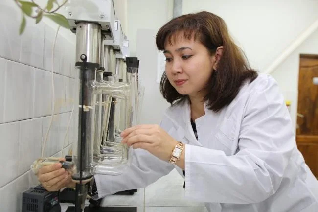
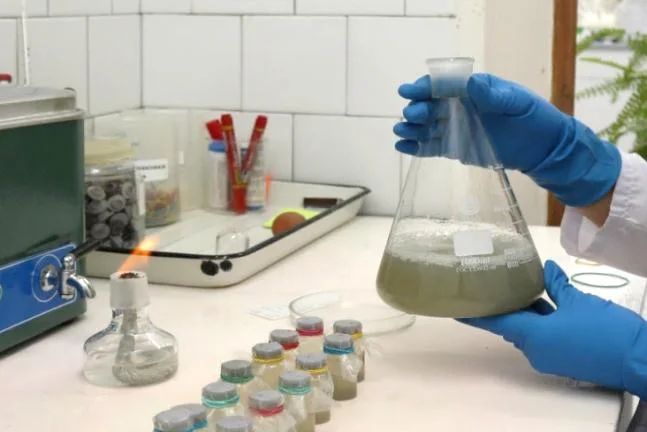
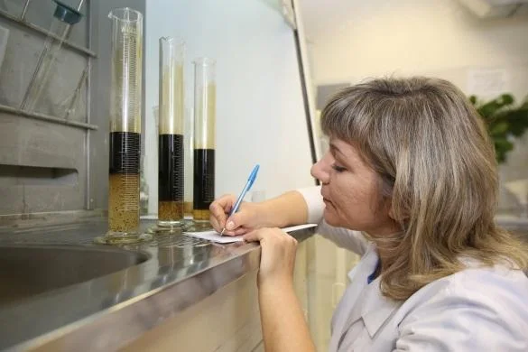
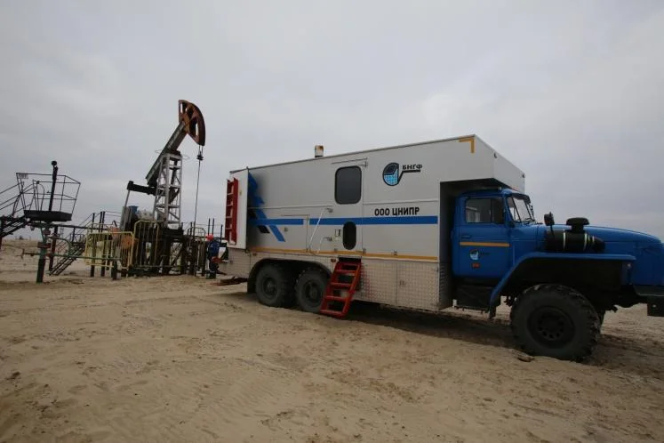
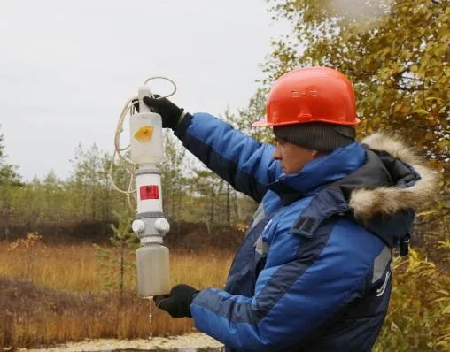
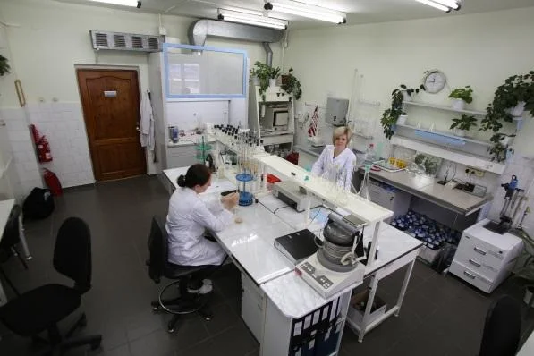
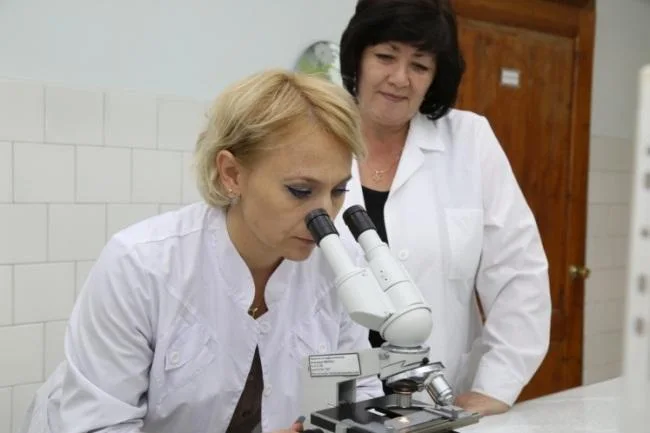
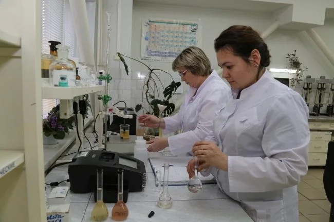
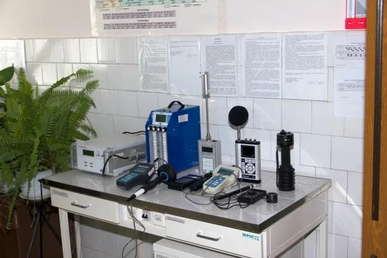
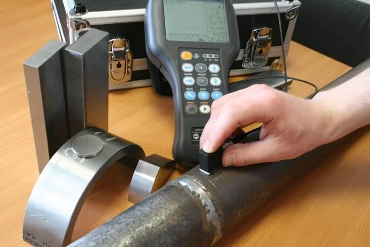

ООО «ЦНИПР», Когалым. Группа компаний АО «Башнефтегеофизика»
Исследуем нефть, газ, воду и сами скважины
Центр научно-исследовательских и производственных работ: лаборатории физико-химических и химико-аналитических исследований, экологии и промсанитарии, неразрушающего контроля.
- 1966
- с этого года накоплен опыт гидродинамических и физико-химических исследований
- 600+
- квалифицированных специалистов, по данным центра
- 4
- города с цехами НИПР: Когалым, Покачи, Лангепас, Урай



Что исследуем и проверяем
Гидродинамические исследования скважин
Пластовое давление, кривые восстановления, трассерные, газоконденсатные и газодинамические исследования, раздельный учёт при ОРД
ПодобратьХимико-аналитические исследования
Нефть, газ, воды, солевые отложения, реагенты, горюче-смазочные материалы, топлива и пенообразователь
ПодобратьКоррозионный мониторинг
Состояние нефтепромыслового оборудования и трубопроводов, коррозионная активность сред, мероприятия по защите
ПодобратьЭкспертиза промышленной безопасности
Технические устройства, здания и сооружения на опасных производственных объектах, неразрушающий контроль
ПодобратьЭкологическая безопасность
Мониторинг природной среды, обследование водоохранных зон, проекты нормативов выбросов и отходов
ПодобратьСпециальная оценка условий труда
Физические и химические факторы, радиационный контроль, воздух из ёмкостей перед огневыми работами, вентиляция
ПодобратьНормирование ресурсов
Нормы труда, материально-технические и топливно-энергетические ресурсы, производственные запасы
ЗапроситьЭнергоаудит и энергопаспорт
Оценка затрат на энергию, топливо и воду, энергетический паспорт и программа экономии
Запросить
От пробы к протоколу
Выберите объект: увидите, что по нему исследуют, какие лаборатории центра подходят по профилю и что уйдёт в запрос стоимости.
Проба
Вода
Услуга:
Что исследуют
Отметьте нужное
Кто по профилю
Подбор составлен по описаниям услуг и названиям лабораторий на cnipr.ru. Входит ли конкретный показатель в область аккредитации и какая лаборатория примет пробу, подтверждает центр.
Лаборатории, выросшие вместе с месторождениями Западной Сибири
ООО «ЦНИПР» основано в 2008 году на базе промысловых и научно-исследовательских лабораторий, которые работают с начала разработки месторождений Западной Сибири.
- 1966начало опыта гидродинамических и физико-химических исследований
- 2008основан Центр научно-исследовательских и производственных работ
- Сегодняв группе компаний АО «Башнефтегеофизика»


Газоконденсатные исследования на скважине
- Спуск приборов по технологии slick-line без дополнительной герметизации устья
- Исследование без вывода скважины из технологического режима, с манифольдом
- Опыт работы на фонде с рабочими давлениями до 70 МПа
- Геологическое сопровождение работ
В лабораториях центра





Аттестаты, лицензии, свидетельства
Номера приведены по разделу «Лицензии» на cnipr.ru. Срок действия и область аккредитации перед договором стоит проверить. Сканы на действующем сайте
Лаборатории физико-химических и химико-аналитических исследований
- Химико-аналитическая, Когалым
- RA.RU.21АО57
- Физико-химическая, Когалым
- РОСС RU.0001.21НН22
- Физико-химическая, Лангепас
- РОСС RU.0001.21НН14
- Физико-химическая, Покачи
- RA.RU.516581
- Физико-химическая, Урай
- RA.RU.518506
Экология, промсанитария, неразрушающий контроль
- Экологии и промсанитарии, Когалым
- РОСС RU.0001.511597
- Экологии и промсанитарии, Лангепас
- RA.RU.511241
- Экологии и промсанитарии, Урай
- РОСС RU.0001.512180
- Неразрушающего контроля, аккредитация
- ИЛ/ЛРИ-00354
- Неразрушающего контроля, аттестация
- 89А141479
Лицензии и реестры
- Экспертиза промышленной безопасности
- ДЭ-00-011086
- Источники ионизирующего излучения
- 86.ХЦ.23.002.Л.000056.10.08
- Гидрометеорология и смежные области
- Р/2015/2782/100/Л
- Реестр Минтруда: проведение СОУТ
- № 425 от 22.12.2016
Заявка и контакты
+7 (34667) 4-33-00телефон и факс
cnipr@bngf.ru 628481, ХМАО — Югра, г. Когалым, ул. Центральная, 19- ИНН
- 8608053410
- КПП
- 860801001
- ОГРН
- 1088608000436